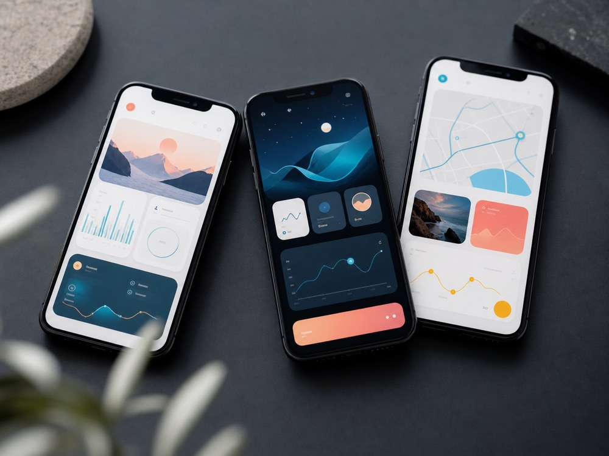
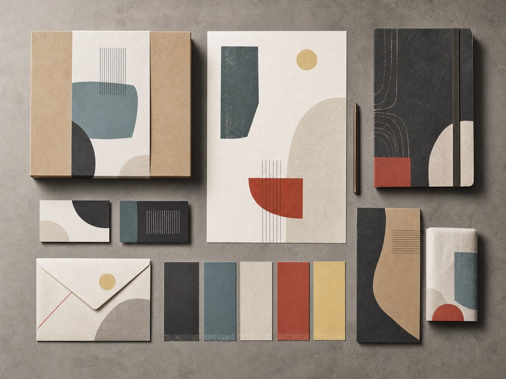
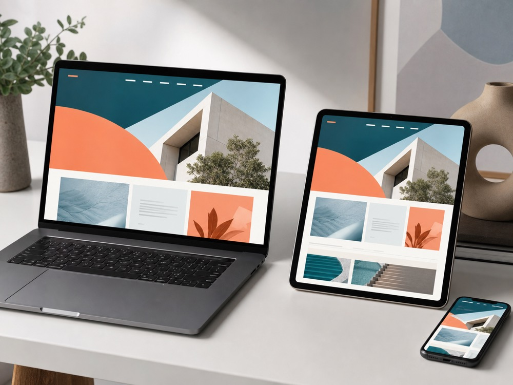

Northline Mobile
A calmer planning flow that helps field teams see priorities, progress, and handoffs at a glance.
Product designer & builder
I shape, design, and build focused products for teams that need to move from a strong idea to something people can use.

A calmer planning flow that helps field teams see priorities, progress, and handoffs at a glance.

A flexible visual system and launch toolkit for a small operations consultancy entering a new market.

A responsive workspace for organizing site observations into client-ready updates and decisions.
I stay close to both the product decisions and the implementation, keeping the experience coherent as it becomes real.